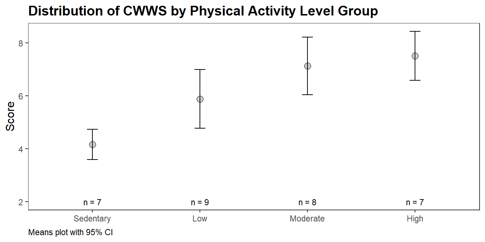
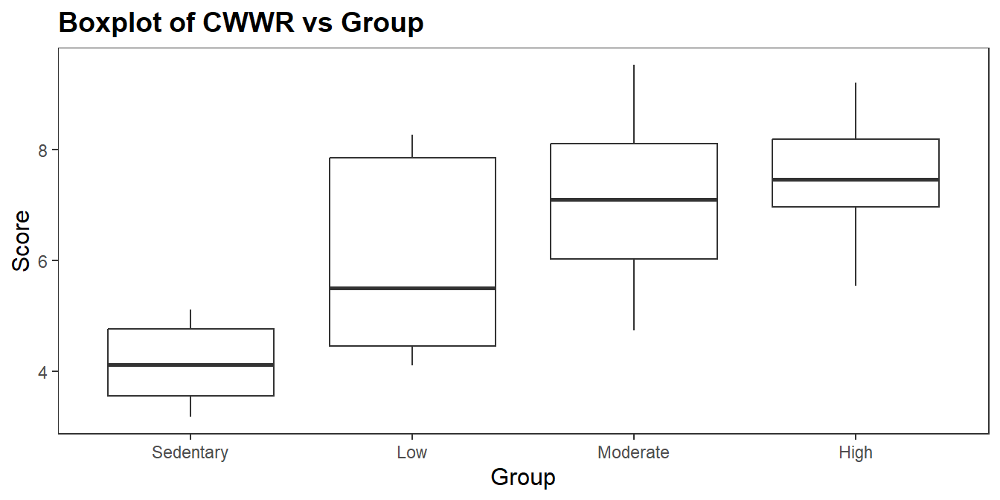
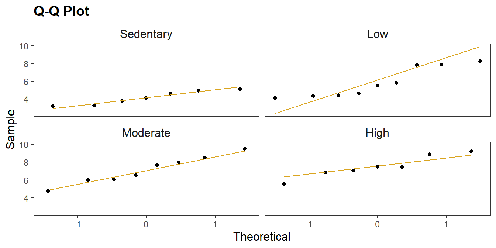
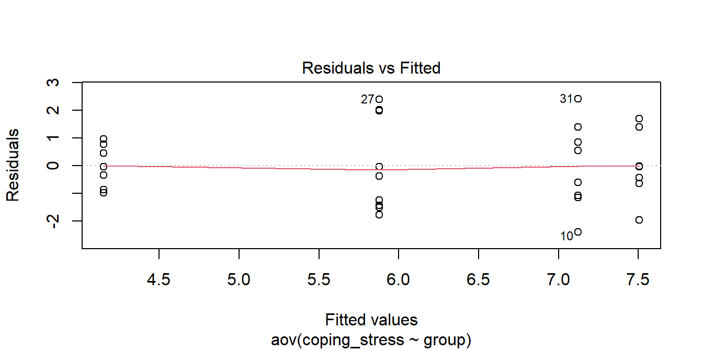
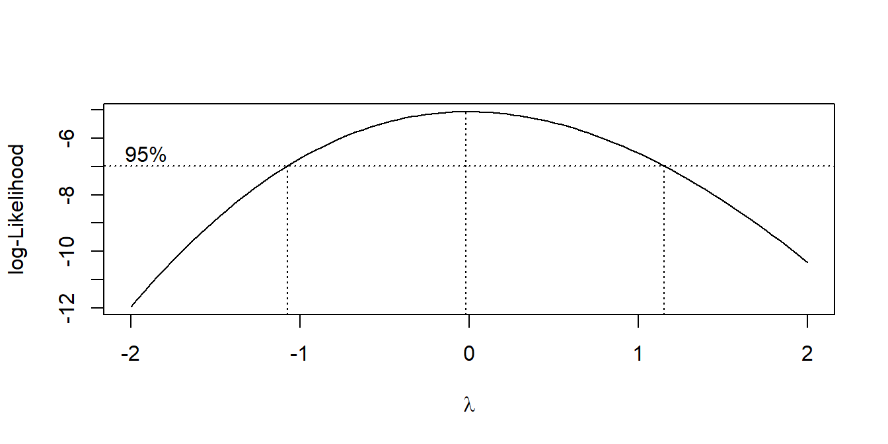
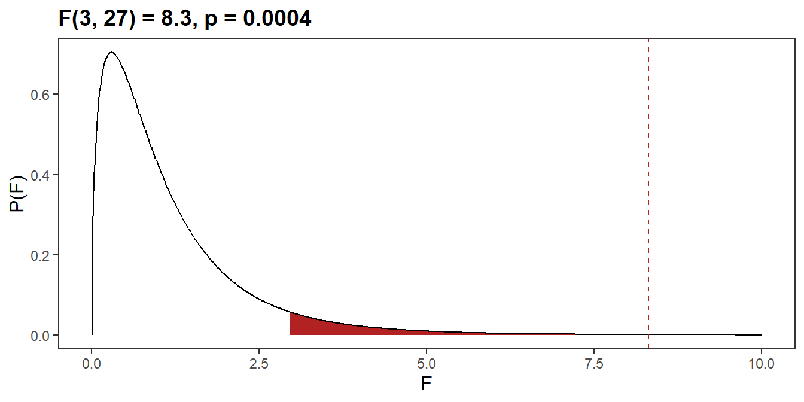
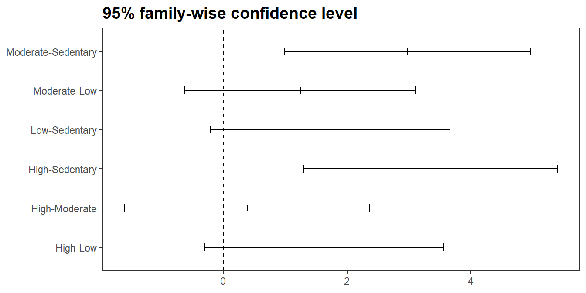

Case Study 3
This case study uses the data set from Laerd Statistics for ANOVA.
cs3 <- list()
# Data sets are the same, so just use one.
# cs3$kw_dat <- read.spss("./input/kruskal-wallis-h-test.sav", to.data.frame = TRUE)
# cs3$anova_dat <- read.spss("./input/one-way-anova.sav", to.data.frame = TRUE)
cs3$dat <- read.spss("./input/kruskal-wallis-h-test.sav", to.data.frame = TRUE)A study tests whether physically active individuals are better able to cope with workplace stress. The study categorizes \(n\) = 31 participants by physical activity level (“Sedentary”, “Low”, “Moderate”, and “High”) and measures their ability to cope with workplace-related stress (CWWS) as the average score of a series of Likert items on a questionnaire (higher scores indicating a greater CWWS ability). The means plot11 and summary table are an initial look at the data.
cs3$dat %>%
group_by(group) %>%
summarize(
.groups = "drop",
mean_coping_stress = mean(coping_stress),
cl_025 = mean_coping_stress + qnorm(.025) * sd(coping_stress) / sqrt(n()),
cl_975 = mean_coping_stress + qnorm(.975) * sd(coping_stress) / sqrt(n()),
n = n()
) %>%
ggplot(aes(x = group, y = mean_coping_stress)) +
geom_point(shape = 21, fill = "gray80", color = "black", size = 3) +
geom_errorbar(aes(ymin = cl_025, ymax = cl_975, width = 0.1)) +
geom_text(aes(y = 2, label = glue("n = {n}")), size = 3) +
labs(title = "Distribution of CWWS by Physical Activity Level Group",
x = NULL, y = "Score",
caption = "Means plot with 95% CI")
(cs3$gt <- cs3$dat %>%
tbl_summary(
by = group,
label = list(coping_stress = "CWWR"),
type = coping_stress ~ "continuous2",
statistic = coping_stress ~ c("{median} ({p25}, {p75})", "{mean}, {sd}")
) %>%
add_n())| Characteristic | N | Sedentary, N = 7 | Low, N = 9 | Moderate, N = 8 | High, N = 7 |
|---|---|---|---|---|---|
| CWWR | 31 | ||||
| Median (IQR) | 4.12 (3.55, 4.77) | 5.50 (4.45, 7.85) | 7.10 (6.03, 8.11) | 7.47 (6.97, 8.19) | |
| Mean, SD | 4.15, 0.77 | 5.88, 1.69 | 7.12, 1.57 | 7.51, 1.24 |
CWWS score increased from the sedentary (M = 4.15, SD = 0.77), to low (M = 5.88, SD = 1.69), to moderate (M = 7.12, SD = 1.57) to high (M = 7.51, SD = 1.24) physical activity groups, in that order.
5.6.1 Assumptions
Recall that the one-way ANOVA test is valid under three assumptions. One, there are no significant outliers that influence the group mean. Two, the dependent variable is at least approximately (ANOVA is robust to this assumption) normally distributed for each group if the sample size is small (for large sample sizes the Central Limit Theorem shows normality is unnecessary). Three, the dependent variable should have equal variances across groups. ANOVA is only sensitive to this condition if the group sample sizes are not similar.
Kruskal-Wallis has no assumptions per se, but the interpretation of its results depend on the distribution of the dependent variable. If the distributions are similar, then the test results tell you whether the medians differ. Otherwise, the test results tell you whether the distributions differ.
Use a boxplot to assess outliers for ANOVA and the data distribution (if you revert to Kruskal-Wallis). Values greater than 1.5 IQR from the hinges (values beyond the whiskers) are outliers. Outliers might occur from data entry errors or measurement errors, so investigate and fix or throw them out. If the outlier is a genuinely extreme, you still have a couple options before reverting to Kruskal-Wallis. You can transform the dependent variable, but don’t do this unless the data is also non-normal. Transforming the variable also has the downside of making interpretation more difficult. You can also leave the outlier(s) in if it doesn’t affect the conclusion. There are no outliers here.
cs3$dat %>%
ggplot(aes(x = group, y = coping_stress)) +
geom_boxplot(outlier.color = "goldenrod", outlier.size = 2) +
labs(title = "Boxplot of CWWR vs Group",
y = "Score", x = "Group")
There is no accepted practice for determining whether distributions are similar. The boxplot reveals a wider range of values for “Low” group, but this is close enough to conclude the distributions are similar.
You can assume the populations are normally distributed if \(n_j >= 30\). Otherwise, try the Q-Q plot, or skewness and kurtosis values, or histograms. If you still don’t feel confident about normality, run the Shapiro-Wilk test of normality or the Kolmogorov-Smirnov test. Definitely do not use Shapiro-Wilk for \(n_j >= 30\) because it is too sensitive. The Normal Q-Q plot below looks good for all groups except perhaps the “Low” group. The Shapiro-Wilk test confirms this, with all p-values over .05.
cs3$dat %>%
ggplot(aes(sample = coping_stress)) +
stat_qq() +
stat_qq_line(col = "goldenrod") +
facet_wrap(facets = vars(group)) +
labs(title = "Q-Q Plot", x = "Theoretical", y = "Sample")
## # A tibble: 4 × 4
## group statistic p.value method
## <chr> <dbl> <dbl> <chr>
## 1 Sedentary 0.928 0.538 Shapiro-Wilk normality test
## 2 Low 0.841 0.0589 Shapiro-Wilk normality test
## 3 Moderate 0.976 0.940 Shapiro-Wilk normality test
## 4 High 0.944 0.671 Shapiro-Wilk normality testHad the data failed the normality test, you could probably carry on anyway since the test is fairly robust to deviations from normality, particularly if the sample sizes are nearly equal. You can also try transforming the dependent variable. Transformations will generally only work when the distribution of scores in all groups are the same shape. Otherwise, revert to the Kruskal-Wallis H test.
ANOVA’s equality of sample variances condition is less critical when sample sizes are similar among the groups (as they are here). A rule of thumb is that no group’s standard deviation should be more than double that of any other. In this case, “Moderate” and “Low” are more than double “Sedentary”.
## # A tibble: 4 × 4
## group n sd multiple
## <fct> <int> <dbl> <dbl>
## 1 Sedentary 7 0.771 1
## 2 High 7 1.24 1.61
## 3 Moderate 8 1.57 2.04
## 4 Low 9 1.69 2.19There are two common tests, Bartlett and Levene12. Levene is less sensitive to departures from normality. Neither test rejects the null hypothesis of equality of variance here.
(cs3$levene <- car::leveneTest(coping_stress ~ group, data = cs3$dat, center = "mean"))
## Levene's Test for Homogeneity of Variance (center = "mean")
## Df F value Pr(>F)
## group 3 2.129 0.1199
## 27
(cs3$bartlet <- bartlett.test(coping_stress ~ group, data = cs3$dat))
##
## Bartlett test of homogeneity of variances
##
## data: coping_stress by group
## Bartlett's K-squared = 3.7489, df = 3, p-value = 0.2899The residuals vs fitted values plot is included in the set of diagnostic plots that are produced in the base R plot.lm() function.

Heterogeneity of variances is a common problem in ANOVA. The Box-Cox procedure can help find a good transformation to remove heterogeneity. MASS::boxcox() calculates a profile of log-likelihoods for a power transformation of the dependent variable \(Y^\lambda\).
| \(\lambda\) | \(Y^\lambda\) | Transformation |
|---|---|---|
| 2 | \(Y^2\) | Square |
| 1 | \(Y^1\) | (no transformation) |
| .5 | \(Y^{.5}\) | Square Root |
| 0 | \(\ln(Y)\) | Log |
| -.5 | \(Y^{-.5}\) | Inverse Square Root |
| -1 | \(Y^{-1}\) | Inverse |
The Box-Cox procedure does not recommend any particular transformation of the data in this case.

Had the data failed the homogeneity assumption, you could use a modified version of ANOVA called Welch’s ANOVA and the Games-Howell post hoc test, or you could revert to the nonparametric Kruskal-Wallis test.
5.6.2 ANOVA
If the dependent variable conforms to the three ANOVA assumptions of no outliers, normality, and homogeneity, then you can run a one-way ANOVA with aov(). If the dependent variable only violates the homegeneity assumption, you can run Welch’s ANOVA with oneway.test(..., var.equal = FALSE)
cs3$aov <- aov(coping_stress ~ group, data = cs3$dat)
(cs3$anova <- anova(cs3$aov))
## Analysis of Variance Table
##
## Response: coping_stress
## Df Sum Sq Mean Sq F value Pr(>F)
## group 3 49.033 16.3443 8.316 0.0004454 ***
## Residuals 27 53.066 1.9654
## ---
## Signif. codes: 0 '***' 0.001 '**' 0.01 '*' 0.05 '.' 0.1 ' ' 1
(cs3$welch <- oneway.test(coping_stress ~ group, data = cs3$dat, var.equal = FALSE))
##
## One-way analysis of means (not assuming equal variances)
##
## data: coping_stress and group
## F = 14.821, num df = 3.000, denom df = 14.574, p-value = 0.0001058The ability to cope with workplace-related stress (CWWS score) was statistically significantly different for different levels of physical activity group, F(3, 27) = 8.3, p = 0.0004.
tibble(
f_stat = seq(0, 10, .01),
d_val = df(f_stat, 3, 14.574),
p_f = pf(f_stat, cs3$anova$Df[1], cs3$anova$Df[2], lower.tail = FALSE),
region = if_else(p_f < .05, "reject", "accept")
) %>%
ggplot(aes(x = f_stat, y = d_val)) +
geom_area(aes(fill = region), show.legend = FALSE) +
geom_line() +
geom_vline(xintercept = cs3$anova$"F value"[1], linetype = 2, color = "firebrick") +
scale_fill_manual(values = c(reject = "firebrick", accept = "white")) +
labs(
title = glue::glue("F({paste(cs3$anova$Df, collapse = ', ')}) = ",
"{comma(cs3$anova$'F value'[1], .1)}, p = ",
"{comma(cs3$anova$'Pr(>F)'[1], .0001)}"),
x = "F", y = "P(F)"
)
The F test does not indicate which populations cause the rejection of \(H_0\). Conduct a Tukey post hoc test if you have no specific hypothesis about two groups differing or want to see all group differences.13 If you want to compare two groups or set of groups, then use a custom contrast. Tukey is valid for balanced designs. If you have different sample sizes per group, use the Tukey-Kramer post hoc test. If the dependent variable failed the homogeneity of variances assumption, you would run the Games-Howell post hoc test instead.
(cs3$tukey <- TukeyHSD(cs3$aov))
## Tukey multiple comparisons of means
## 95% family-wise confidence level
##
## Fit: aov(formula = coping_stress ~ group, data = cs3$dat)
##
## $group
## diff lwr upr p adj
## Low-Sedentary 1.7276175 -0.2057757 3.661011 0.0923527
## Moderate-Sedentary 2.9715262 0.9859704 4.957082 0.0018413
## High-Sedentary 3.3540854 1.3034122 5.404759 0.0006806
## Moderate-Low 1.2439086 -0.6202750 3.108092 0.2835038
## High-Low 1.6264679 -0.3069254 3.559861 0.1226045
## High-Moderate 0.3825593 -1.6029965 2.368115 0.9517285
(cs3$games_howell <- rstatix::games_howell_test(cs3$dat, coping_stress ~ group))
## # A tibble: 6 × 8
## .y. group1 group2 estimate conf.low conf.high p.adj p.adj.signif
## * <chr> <chr> <chr> <dbl> <dbl> <dbl> <dbl> <chr>
## 1 coping_stress Sedenta… Low 1.73 -0.163 3.62 7.7 e-2 ns
## 2 coping_stress Sedenta… Moder… 2.97 1.07 4.88 3 e-3 **
## 3 coping_stress Sedenta… High 3.35 1.66 5.05 5.84e-4 ***
## 4 coping_stress Low Moder… 1.24 -1.04 3.53 4.23e-1 ns
## 5 coping_stress Low High 1.63 -0.508 3.76 1.67e-1 ns
## 6 coping_stress Moderate High 0.383 -1.76 2.52 9.51e-1 nsTukey post hoc analysis revealed that the increase from sedentary to moderate (2.97, 95% CI (0.99 to 4.96)) was statistically significant (p = 0.002), as well as the increase from sedentary to high (3.35, 95% CI (1.30 to 5.40)) was statistically significant (p = 0.001), but no other group differences were statistically significant.
cs3$tukey %>%
tidy() %>%
ggplot(aes(y = contrast, x = estimate)) +
geom_point(shape = 3) +
geom_errorbar(aes(xmin = conf.low, xmax = conf.high), width = .2) +
geom_vline(aes(xintercept = 0), linetype = 2) +
labs(x = NULL, y = NULL, title = "95% family-wise confidence level")
Games-Howell post hoc analysis revealed that the increase from sedentary to moderate (2.97, 95% CI (1.07 to 4.88)) was statistically significant (p =0.003), as well as the increase from sedentary to high (3.35, 95% CI (1.66 to 5.05, p = 0.001).
If you have specific hypotheses about the differences between the groups of your independent variable, e.g., whether the mean CWWS differs between the “Low” and “Sedentary” groups, \(H_0: \sum_i^K{c_i u_i} = 0\) where \(c_i = (1, -1, 0, 0)\) or “Sedentary” and average of all others, \(c_i = (1, -1/3, -1/3, -1/3)\), set up a contrast using the multcomp package.
cs3$glht_1 <- multcomp::glht(cs3$aov, linfct = multcomp::mcp(group = c(-1, 1, 0, 0)))
summary(cs3$glht_1)
##
## Simultaneous Tests for General Linear Hypotheses
##
## Multiple Comparisons of Means: User-defined Contrasts
##
##
## Fit: aov(formula = coping_stress ~ group, data = cs3$dat)
##
## Linear Hypotheses:
## Estimate Std. Error t value Pr(>|t|)
## 1 == 0 1.7276 0.7065 2.445 0.0213 *
## ---
## Signif. codes: 0 '***' 0.001 '**' 0.01 '*' 0.05 '.' 0.1 ' ' 1
## (Adjusted p values reported -- single-step method)
cs3$glht_2 <- multcomp::glht(cs3$aov, linfct = multcomp::mcp(group = c(-1, 1/3, 1/3, 1/3)))
summary(cs3$glht_2)
##
## Simultaneous Tests for General Linear Hypotheses
##
## Multiple Comparisons of Means: User-defined Contrasts
##
##
## Fit: aov(formula = coping_stress ~ group, data = cs3$dat)
##
## Linear Hypotheses:
## Estimate Std. Error t value Pr(>|t|)
## 1 == 0 2.6844 0.6029 4.452 0.000133 ***
## ---
## Signif. codes: 0 '***' 0.001 '**' 0.01 '*' 0.05 '.' 0.1 ' ' 1
## (Adjusted p values reported -- single-step method)There are three groups, so you need to adjust the p-value and 95% CI for them.
confint(cs3$glht_1, level = 1-.05/3)
##
## Simultaneous Confidence Intervals
##
## Multiple Comparisons of Means: User-defined Contrasts
##
##
## Fit: aov(formula = coping_stress ~ group, data = cs3$dat)
##
## Quantile = 2.5525
## 98.3333333333333% family-wise confidence level
##
##
## Linear Hypotheses:
## Estimate lwr upr
## 1 == 0 1.7276 -0.0757 3.5309
confint(cs3$glht_2, level = 1-.05/3)
##
## Simultaneous Confidence Intervals
##
## Multiple Comparisons of Means: User-defined Contrasts
##
##
## Fit: aov(formula = coping_stress ~ group, data = cs3$dat)
##
## Quantile = 2.5525
## 98.3333333333333% family-wise confidence level
##
##
## Linear Hypotheses:
## Estimate lwr upr
## 1 == 0 2.6844 1.1454 4.2234There was no statistically significant increase in CWWS score from the sedentary group (4.15, 0.77) to the group performing a low level of physical activity (5.88, 1.69), a mean increase of 1.7 (95% CI, -0.08, 3.53), p = 0.021.
CWWS score was statistically significantly higher in the non-sedentary groups (M = 6.8) compared to the sedentary group (4.15, 0.77), a mean increase of 1.7 (95% CI, 1.15, 4.22), p = 0.000.
You may also want to report the \(\omega^2\) effect size,
\[\omega^2 = \frac{SSR - df_R \cdot MSE}{MSE + SST}\]
where SSR is the between groups sum of squares, 49.0, MSE is the within groups mean square, 1.97, and SST is the total sum of squares, 102.1.
## term | df | sumsq | meansq | statistic | p.value | etasq | partial.etasq | omegasq | partial.omegasq | epsilonsq | cohens.f | power
## -----------------------------------------------------------------------------------------------------------------------------------------
## group | 3 | 49.033 | 16.344 | 8.316 | < .001 | 0.480 | 0.480 | 0.415 | 0.415 | 0.423 | 0.961 | 0.993
## Residuals | 27 | 53.066 | 1.965 | | | | | | | | |\(\omega^2\) estimates the population effect size. It \(\omega^2\) ranges from -1 to +1. Here, \(\omega^2\) is 0.415.
## [1] "49.0"Alternatively, the partial eta squared statistic, \(\eta^2\), measures the effect size in the sample. Here \(\eta^2\) is 0.48.
Now you can report your results.
A one-way ANOVA was conducted to determine if the ability to cope with workplace-related stress (CWWS score) was different for groups with different physical activity levels. Participants were classified into four groups: sedentary (n = 7), low (n = 9), moderate (n = 8) and high levels of physical activity (n = 7). There were no outliers, as assessed by boxplot; data was normally distributed for each group, as assessed by Shapiro-Wilk test (p > .05); and there was homogeneity of variances, as assessed by Levene’s test of homogeneity of variances (p = 0.120). CWWS score was statistically significantly different between different physical activity groups, F(3, 27) = 8.3, p = 0.0004, \(\omega^2\) = 0.415. CWWS score increased from the sedentary (M = 4.15, SD = 0.77), to low (M = 5.88, SD = 1.69), to moderate (M = 7.12, SD = 1.57) to high (M = 7.51, SD = 1.24) physical activity groups, in that order. Tukey post hoc analysis revealed that the mean increase from sedentary to moderate (2.97, 95% CI [0.99 to 4.96]) was statistically significant (p = 0.002), as well as the increase from sedentary to high (3.35, 95% CI [1.30 to 5.40], p = 0.001), but no other group differences were statistically significant.
Had the dependent variable failed the homogeneity of variances assumption, you would report the results from Welch’s ANOVA,
The ability to cope with workplace-related stress (CWWS score) was statistically significantly different for different levels of physical activity group, Welch’s F(3, 14.6) = 14.8, p < .0005.
and the Games-Howell post hoc test,
Games-Howell post hoc analysis revealed that the increase from sedentary to moderate (2.97, 95% CI [1.07 to 4.88]) was statistically significant (p =0.003), as well as the increase from sedentary to high (3.35, 95% CI [1.66 to 5.05], p = 0.001).
Power Analysis
If you run an ANOVA and do not reject the null hypothesis, you may want to run a power analysis to make sure the power of the test was not very low. Power is the ability to reject the null when the null is really false. Power is affected by sample size, effect size, variability of the experiment, and the significance of the type 1 error. You typically want power to be at 80%, meaning 80% of the time your test rejects the null when it should, and 20% of the time your test does not reject the null when it should.
power.anova.test(
groups = cs3$aov$rank,
n = cs3$aov$model %>% count(group) %>% pull(n) %>% min(),
between.var = cs3$dat %>% group_by(group) %>%
summarize(M = mean(coping_stress)) %>% pull(M) %>% var(),
within.var= cs3$anova$`Mean Sq`[2],
sig.level = 0.05
)##
## Balanced one-way analysis of variance power calculation
##
## groups = 4
## n = 7
## between.var = 2.283631
## within.var = 1.965395
## sig.level = 0.05
## power = 0.9787783
##
## NOTE: n is number in each group5.6.3 Kruskal-Wallis Test
Run a Kruskal-Wallis H test with kruskal.test().
##
## Kruskal-Wallis rank sum test
##
## data: coping_stress by group
## Kruskal-Wallis chi-squared = 14.468, df = 3, p-value = 0.002332The dependent variable has similarly shaped distributions for all groups of the independent variable, so you can conclude the median CWWS scores were statistically significantly different between groups, \(\chi^2\)(3) = 14.5, p = 0.0023. Otherwise you would conclude the distributions differ. You rejected the null hypothesis, so continue on with a post hoc test to determine which medians (similar distributions) or mean ranks (dissimilar distributions) differ with the Dunn procedure using a Bonferroni correction for multiple comparisons.
## Registered S3 methods overwritten by 'FSA':
## method from
## confint.boot car
## hist.boot car## Dunn (1964) Kruskal-Wallis multiple comparison## p-values adjusted with the Bonferroni method.## Comparison Z P.unadj P.adj
## 1 High - Low 1.6801430 0.0929294869 0.557576921
## 2 High - Moderate 0.2163067 0.8287486760 1.000000000
## 3 Low - Moderate -1.5121301 0.1305007724 0.783004635
## 4 High - Sedentary 3.3216144 0.0008949829 0.005369897
## 5 Low - Sedentary 1.8429610 0.0653346998 0.392008199
## 6 Moderate - Sedentary 3.2142419 0.0013078945 0.007847367P.adj equals P.unadj multiplied by the number of comparisons (6). You could report the adjusted p or the unadjusted p with a note that you accepted statistical significance at the p < .05 / 6 = 0.0083 level.
Now you can report your results.
A Kruskal-Wallis test was conducted to determine if there were differences in CWWS scores between groups that differed in their level of physical activity: the “sedentary” (n = 7), “low” (n = 9), “moderate” (n = 8) and “high” (n = 7) physical activity level groups. Distributions of CWWS scores were similar for all groups, as assessed by visual inspection of a boxplot. Median CWWS scores were statistically significantly different between the different levels of physical activity group, \(\chi^2\)(3) = 14.5, p = 0.0023. Subsequently, pairwise comparisons were performed using Dunn’s (1964) procedure with a Bonferroni correction for multiple comparisons. Adjusted p-values are presented. This post hoc analysis revealed statistically significant differences in CWWS scores between the sedentary (Mdn = 4.12) and moderate (Mdn = 7.10) (p = 0.0078) and sedentary and high (Mdn = 7.47) (p = 0.0054) physical activity groups, but not between the low physical activity group (Mdn = 5.50) or any other group combination.
Had the distributions been different, you would report “CWWS scores” instead of “Median CWWS scores” and report the mean ranks instead of Mdn. Unfortunately, you cannot retrieve those ranks from the test object, so you would have to calculate them yourself.